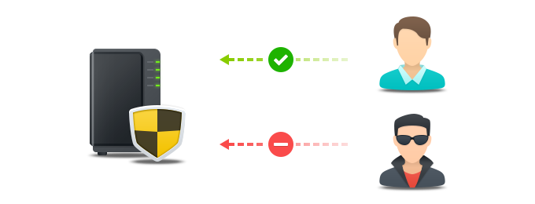
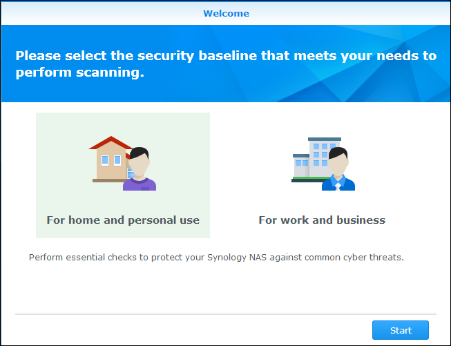
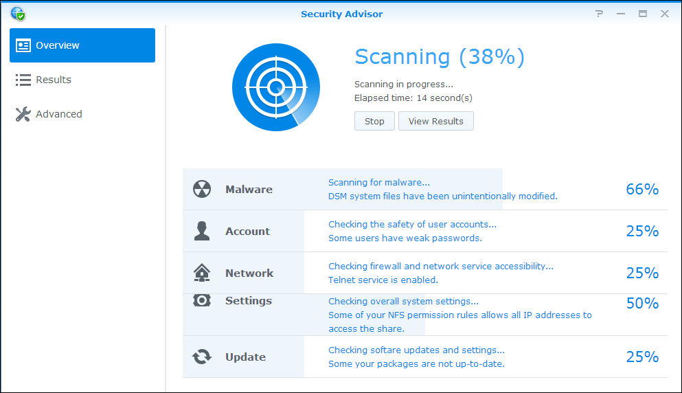
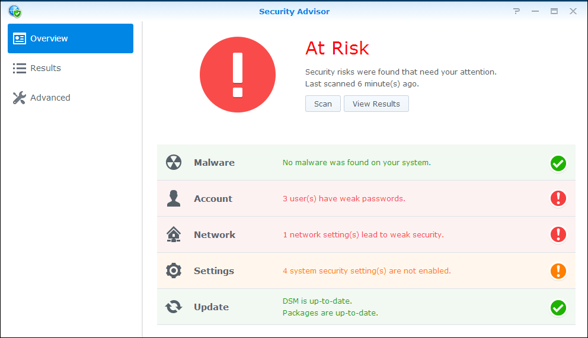
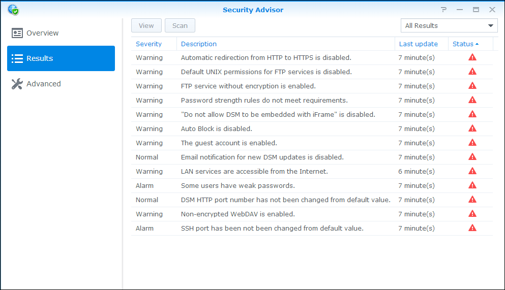
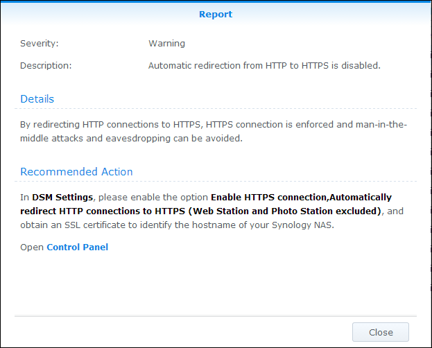
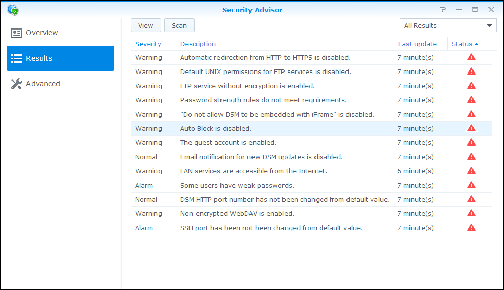
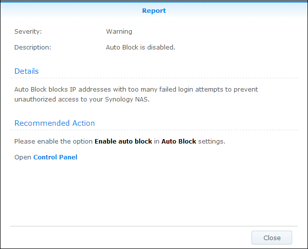
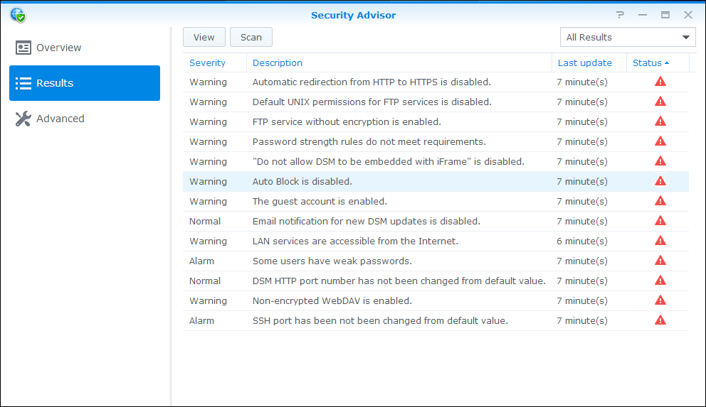
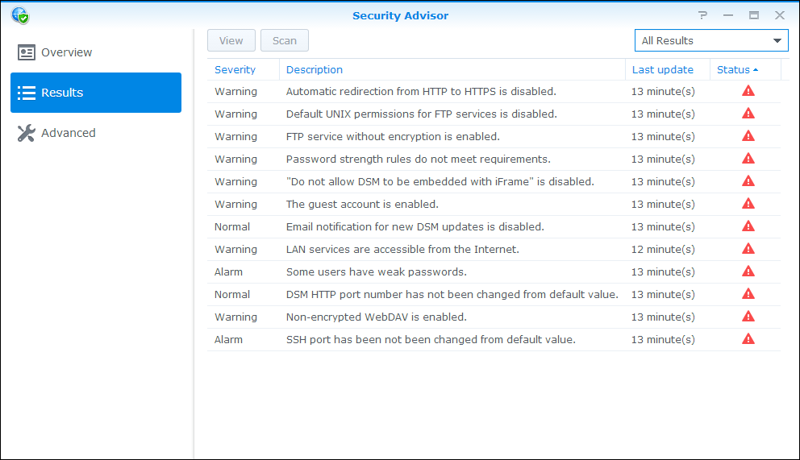

Overview
DSM has a new feature called Security Advisor that helps keep your Synology NAS safe. Security Advisor scans the overall configuration of your Synology NAS and provides detailed reports on its security status. In addition, Security Advisor will show you how to manage any identified security risks. Open Security Advisor and learn how to:
- Run a security scan
- View security rule reports
- Manage security risks
1. Run a Security Scan
- The first time you open Security Advisor, you will be asked what you use your Synology NAS for. Pick Home or Work depending on your situation and click Start. You can always change this setting later in the Advanced page.

- Security Advisor will start scanning your Synology NAS configuration. You can view the overall security status, scan progress, and results summary in the Overview page.

- Once the scan finishes, results for each category of security rules is displayed. Security Advisor will provide an overall status for each category and summarize any security risk findings.

2. View Security Rule Reports
- Click View Results on the Overview page.You can view detailed information of your completed scan on a report-by-report basis.

- Double-click on any security rule to open a detailed report. Each report may contain information about the Severity, Description, Details, and Recommmended Action for each security rule.

3. Manage Security Risks
Let us take a look at an example of a failed security rule and walk through how to manage it.
- Security Advisor will identify potential security risks for any failed security rule. Here, Security Advisor detects that Auto Block is disabled.

- Open a failed security rule to view detailed information. Under Recommended Action, Security Advisor provides guidance on how to manage this security risk.

- Click on Open to go directly to the corresponding settings page and follow the Recommended Action.
- In the Results page, rescan the failed security rule by selecting the rule and clicking Scan.

- No security risks are detected for this security rule. Security Advisor will continue helping you identify potential security risks and recommend actions to manage these risks. Keep your Synology NAS safe by regularly performing scans in Security Advisor!
